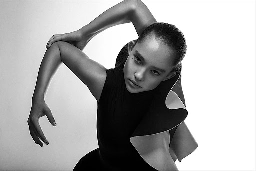
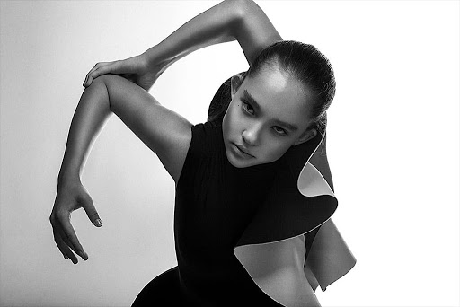

Online school
ЧТО ДАЕТ VOGUE? Уверенность в себе, умение эффектно себя подать не только в танце, но и в обществе. умение красиво двигаться (ходьба на каблуках, позировки) большую физическую нагрузку и, как следствие, подтянутую фигуру. Нагрузка в воге идет на все группы мышц, особенно на руки. повышает музыкальность и артистизм. погружение в ball-room культуру, знакомство с топовыми танцорами и представителями fashion-индустрии. повышает уровень английского языка, так как вся база вога - на английском, а так же подавляющее большинство мировых топовых вогеров - англоговорящие.